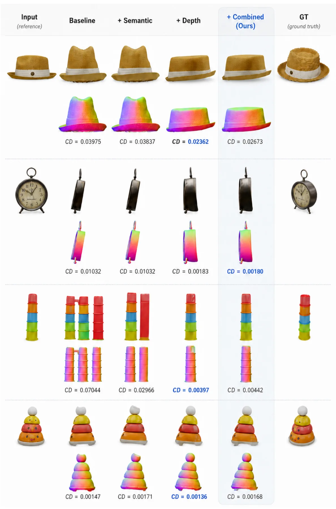
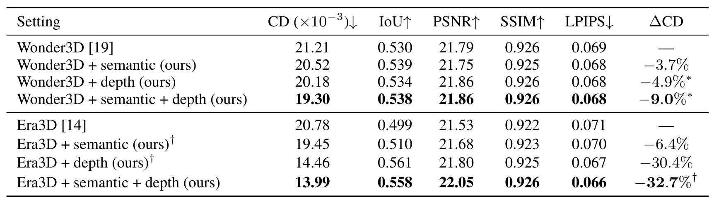

先感知再生成：对象感知增强单视图三维重建Seeing Before Generating: Object Perception Enhances Single-View 3D Reconstruction
通用插拔思路有用，但摘要缺少具体数值，且单视图生成与测量级场景重建仍有距离。
一句话工作总结
将预训练感知模型的语义和几何信号作为通用条件，插入不同单视图三维重建管线。
摘要
本文研究学习式对象感知如何增强单视图三维重建。方法从预训练感知模型提取语义与几何信号，用其驱动单张图像的对象重建；设计与具体生成模型无关，可作为 plug-and-play 模块接入不同重建方法。在 benchmark 上与两套先进单视图重建管线结合均取得一致且显著的提升。
The relationship between object perception and reconstruction is well established in human vision, yet remains underexplored in computer vision. In this paper, we demonstrate that learnt object perception can significantly enhance 3D reconstruction. Focusing on the challenging task of single-view 3D object reconstruction, we propose a method that leverages perceptual signals extracted from pretrained perception models capturing semantic and geometric information to drive the reconstruction of an object from its single image. Our approach is model-agnostic and can be integrated into various reconstruction methods in a plug-and-play manner. Experiments with two state-of-the-art single-view 3D reconstruction pipelines in a benchmark dataset show consistent and substantial improvements achieved by our method, validating the effectiveness of incorporating perception into generation. We provide in-depth analysis of various aspects of our method and its application. Our project page is at https://ynhuhuynh.github.io/perception-3d/.
中文解读摘录
图表/页面预览

{kind=link}

{kind=link}
